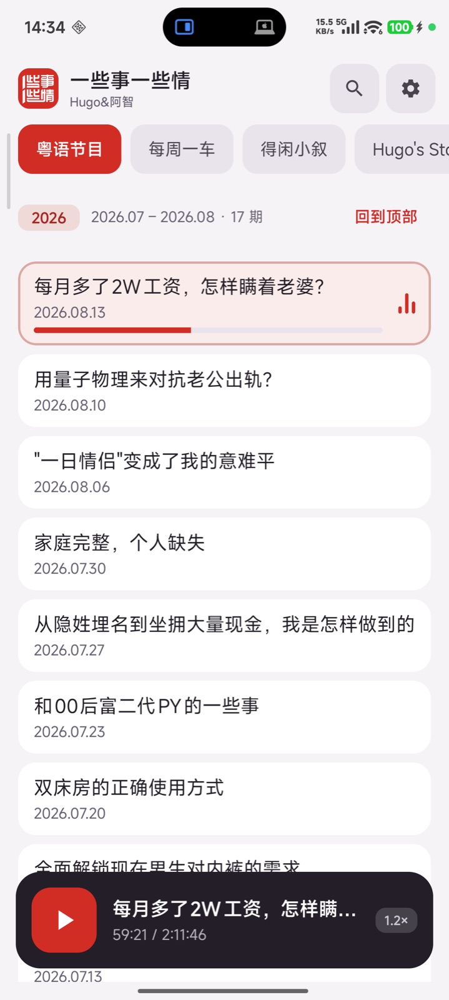
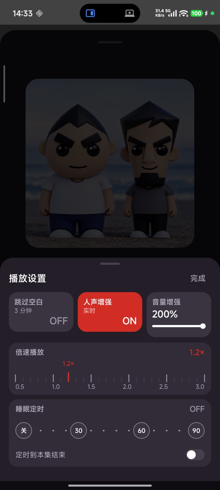
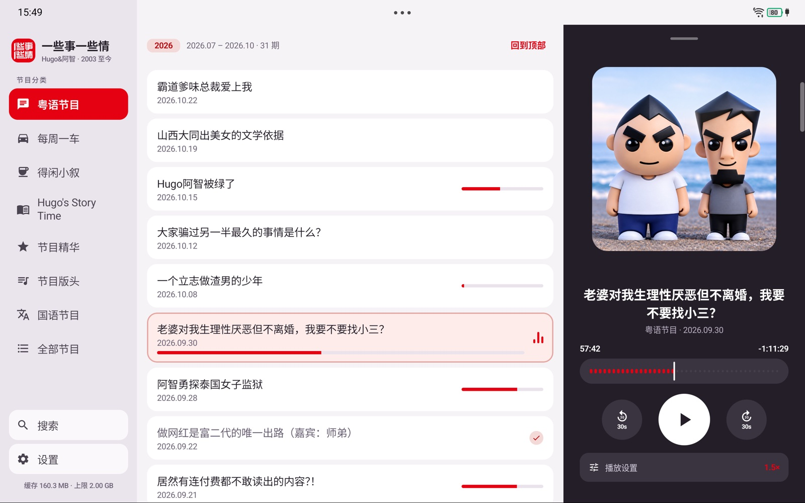
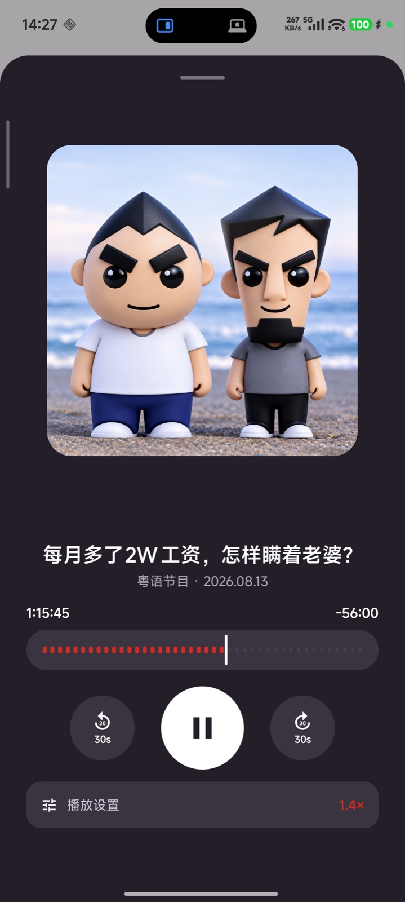

无需登录 · 没有广告 · 没有购物 · 马上收听
为《一些事一些情》的听众打造的安卓播客客户端。无需登录，没有广告，从 2003 年的第一期到最新一期，打开就能听。
从 2003 年到最新一期，全部节目按年份排好；听过的自动离线缓存，重听、续播、回退 30 秒都不耗流量，断网也能整集播放。

离线缓存、0.5–3.0× 倍速、自动跳过片头片尾；人声增强让行车路上字字清楚，音量增强最高 200%，定时关闭到点即停——每项功能独立开关，随意组合。

手机、平板、车机（BYD）三端适配；深色 / 浅色模式自动切换；上车打开应用，马上接着上次的位置播，方向盘按键也能控制。


点下面按钮，或在已装版本的「设置 → 更新」内检查。
首次安装允许「来自此来源的应用」，签名校验通过才能升级。
收听进度、离线缓存、收听历史全部保留，装完接着听。
一款为《一些事一些情》节目粉丝制作的免费开源安卓播客客户端：无需登录、没有广告、没有购物，安装后马上就能收听；缓存、倍速、跳过片头片尾、人声增强、音量增强、定时关闭全部内置，节目源按官网公开链接代为访问。
不会。所有进度存在本地，每次升级都是覆盖安装，收听进度、离线缓存、收听历史原样保留。
支持。手机、平板、车机（BYD）三端适配：横屏三栏布局、5:5 分屏、日夜模式自动切换，上车打开即续播，方向盘媒体按键可控。
默认关闭。开启后跳过的是每期固定的片头片尾（默认 3 分钟，可在设置调 2–5 分钟）；比首尾加起来还短的节目整期不跳。
免费、无广告、无购物、无账号体系，所有功能无内购。项目开源，欢迎在 GitHub 提 Issue。
本应用为非官方第三方客户端，与节目官网及节目方无任何隶属关系。节目内容版权归原作者所有；本应用不存储、不分发任何音频，仅代为访问官网公开链接，非商业用途。